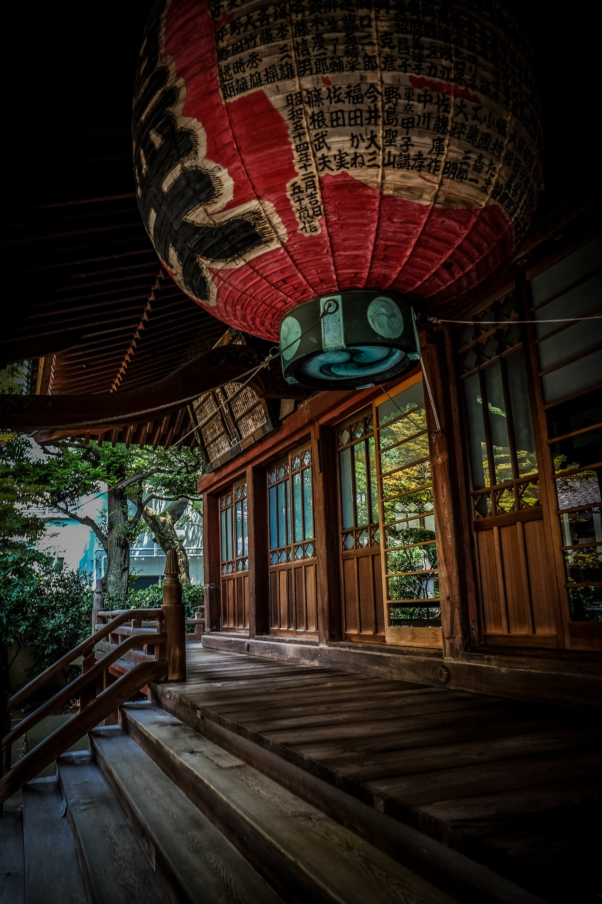
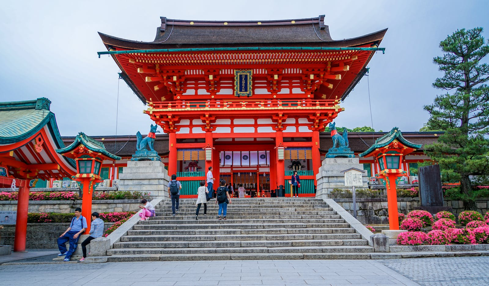
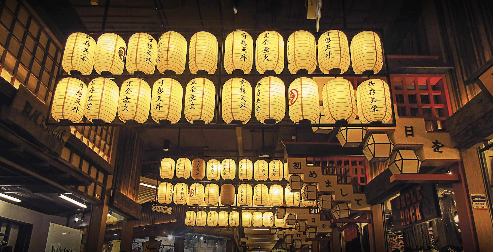

Collections
- 
- 
- 
-

Why
Japan has a wide variety of museums, ranging from small local history museums to large national and international art galleries. Some of the most well-known and highly visited museums in Japan include the Tokyo National Museum, the National Museum of Modern Art in Tokyo, the National Science Museum in Tokyo, the Kyoto National Museum, the National Museum of Art in Osaka, the National Museum of Western Art in Tokyo, the Tokyo Metropolitan Art Museum, the National Museum of Emerging Science and Innovation in Tokyo, and the National Museum of Nature and Science in Tokyo. These museums feature permanent collections of art and artifacts from a variety of different periods, cultures, and countries. They also often host temporary exhibitions of art or science-related topics. In addition to these larger, well-known museums, there are many smaller local museums throughout Japan that focus on the culture and history of particular regions. These include the Saitama Prefectural Museum of History, ' the Hiroshima Peace Memorial Museum, the Sapporo Historical Museum, the Kōchi Prefectural Museum of History, and the Fukuoka City Museum, among many others.
What
The Am Japan Musea is a museum in Osaka, Japan, ' dedicated to the history, culture and art of Japan. The museum has permanent and temporary exhibitions that focus on various aspects of Japanese life and culture, including the history of the country, traditional arts and crafts, and modern innovations. The museum also hosts special events and lectures throughout the year.